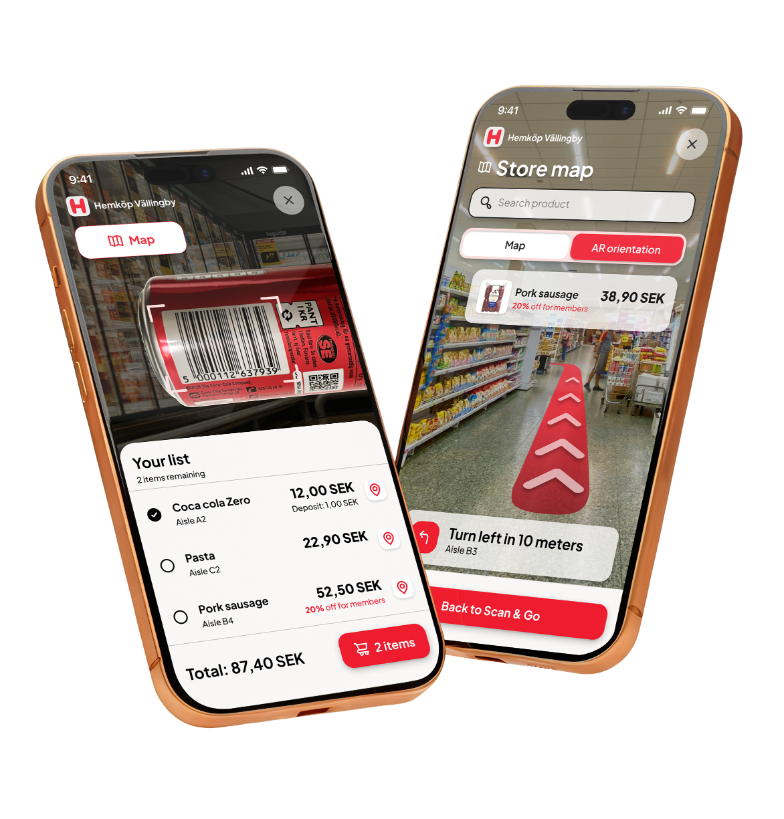

Smart In-Store Mode
A white-label app that helps shoppers find items, catch deals and pay without queueing.
| Role | Product & UI Designer (solo) |
|---|---|
| Format | Design challenge, about 8 hours |
| Platform | iOS · Android |
| Methods | Competitor analysis · Jobs-to-be-done · Affinity mapping · Sketching · Wireframing |


Scan & Go with the shopping list, and AR orientation in the store map.
Based on a design challenge brief from a Nordic retail-tech company.
The company's name has been removed, and the store brand shown is fictional.
The brief
Design a digital solution that improves the in-store shopping experience: help customers find their way, discover relevant products, and engage with promotions and loyalty.
Usability
Is it calm and thumb-friendly?
Hierarchy
What matters most on each screen?
Aesthetics
Does it feel like a real Nordic product?
The real question
Why would anyone open an app inside a store? Honestly, most people don't. Including me. When I walk into a store, I usually ask someone where the oat milk is.
Most people don't open a store app. They ask someone where the oat milk is.
So the real design problem became: how do I give people a reason to keep the app open during the whole trip? I built the solution on two anchors that weren't in the brief.
Scan & Go
A real need: scan to build your cart and pay without queueing. It puts the phone in your hand.
Your List
The weekly shopping list lives in the app, not on paper or in a chat. It brings you back every time.
Without them, the rest of the features would never reach anyone.
Who it's really for
Before designing anything, I looked at who the company is. They don't run stores: they sell software to grocery chains. That changed everything. This isn't one consumer app, it's a white-label module: one engine that each chain runs under its own brand.
Research
In a short competitor scan of four Nordic retail-tech vendors, nobody offered a joined-up, customer-facing in-store app. That was the gap.
I then framed shoppers' needs as jobs to be done:
- 01
Help me find this item fast.
- 02
Show me deals I can actually use.
- 03
Help me not forget anything.
- 04
Let me pay and leave without queueing.
- 05
Make me feel like a loyal customer.
Persona
A proto-persona based on desk research
What to solve first
I grouped everything into ten themes, then set a priority order.
Navigation
If you can't find things, nothing else matters.
Deals
Most valuable once navigation works.
List & routine
Where the habit forms.
Loyalty
Feel rewarded during the trip.
Checkout
No friction at the last step.
Sara's Thursday shop
I mapped her trip in eight moments, from checking her list at home to finding it ready for next week.
- 1Before the store
- 2Arriving
- 3Route
- 4In the aisle
- 5Scanning
- 6Discovery
- 7Checkout
- 8After the shop
The best moments are when the app makes things easier without you noticing, not when it tries to impress you.
Design principles
Zero-effort context
The app knows you're in the store and adapts.
One thumb, no menus
Every key action within thumb reach.
Calm notifications
Opt-in, location-based, never blocking pop-ups.
Loyalty in the moment
Points are always visible.
Accessible by default
WCAG AA, large touch targets, Swedish-ready.
Three tabs, nothing more
Home
Deals, categories and your list
Scan & Go
The heart of the app
Profile
Loyalty, payment and history
From paper to pixels
I started on paper: first a list of what each area needed to do, then the first screens.


10 low-fidelity wireframes covering the whole flow, from Home and store detection to scanning, the map, checkout and profile.
Full scrollable views of the Home and Profile screens.


Visual design
Since it's white-label, colour is a setting, not a style. I designed it in a grocery chain's red to show it running in a real store; another chain would switch it to its own colour, and the system adapts.
Accessibility was built in: WCAG AA contrast, 44 pt minimum touch targets, a clear type hierarchy, and support for Sweden's bottle deposit (pant).
AR, but only for a moment
AR orientation runs for a few seconds when you need it, not all the time: a red path on the floor and one plain instruction, like "Turn left in 10 meters". A superpower, not a gimmick.

With more time 😉
My favourite idea is a Family List: a shared list that updates live, so if my husband adds batteries while I'm already in the store, I see it right away.
Rush mode
Just the route, no discovery.
Gentle reminders
"You usually buy oat milk on Thursdays."
Staff help
Opt-in help when you're stuck.
What I learned
The brief asked for navigation, discovery and loyalty. The most important decision was adding two things it didn't ask for, because without a reason to open the app, none of the rest would ever be used.